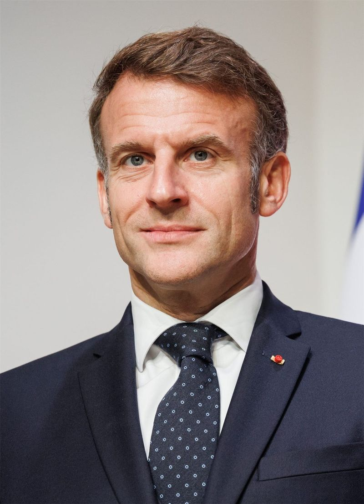

EU 정상회의, 우크라이나·차기 예산 논의… 8개국 총선의 해
EU 지도자들이 우크라이나 지원, 2028~2034 예산, 방위·이민을 의제로 올렸다. 올해 회원국 8곳이 총선을 치른다.
손기요 기자 · 2026.07.03
橋국제

EU 정상들이 우크라이나와 중동, 차기 다년재정계획(MFF·2028~2034), 유럽 방위·안보, 이민 등을 의제로 논의를 이어가고 있다.
광고 문의 · 300×250지난해 말 유럽 지도자들은 우크라이나의 군사·재정 수요를 위해 2년간 900억 유로 무이자 차관을 승인했다. 올해는 8개 회원국이 총선을 치르는 '선거의 해'다.
출처·참고 (사실 확인용 — 본문은 직접 재작성)
· Consilium / EUbusiness (June 2026)
· Consilium / EUbusiness (June 2026)